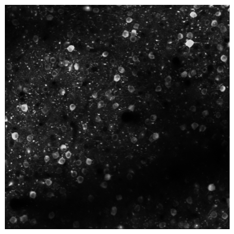
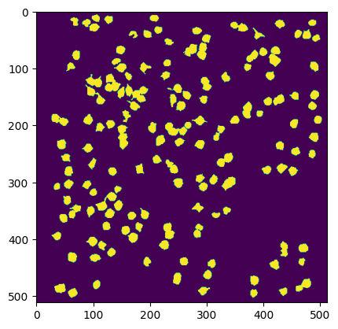
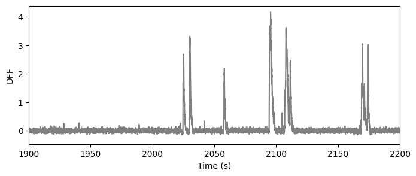
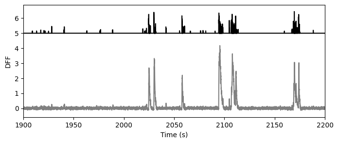
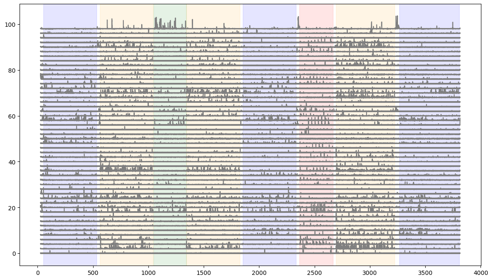
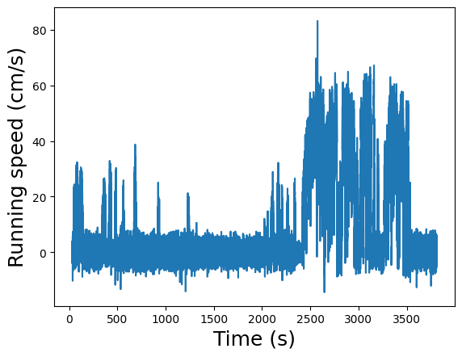
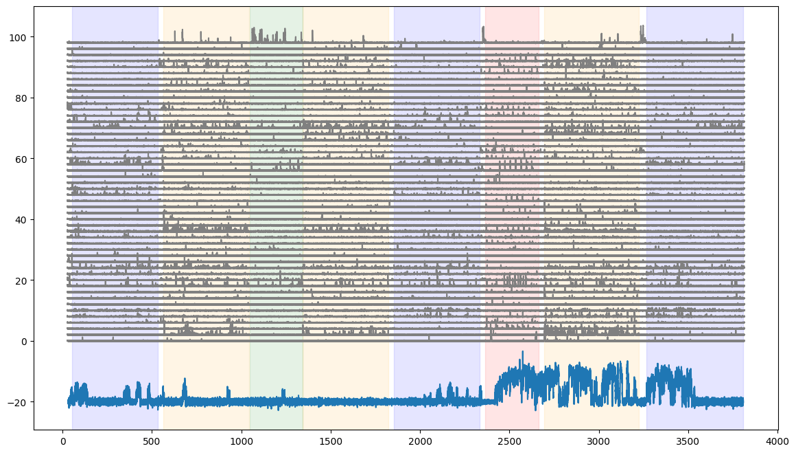

import pynwb
import numpy as np
import matplotlib.pyplot as plt
%matplotlib inline
Getting data from a session#
We’re going to examine the data available for a single session. We load this using pynwb. This loads all of the data available for this session.
nwb_path = r'/data/222426_2016-02-04_10-25-24_nwb_2026-08-19_17-50-08/222426_2016-02-04_10-25-24_nwb_2026-08-19_17-50-08.nwb.zarr'
nwbfile = pynwb.read_nwb(nwb_path)
nwbfile
root (NWBFile)
session_start_time
2016-02-04 10:25:24-08:00timestamps_reference_time
2016-02-04 10:25:24-08:00file_create_date
0
2024-03-19 15:55:50.497145-04:00stimulus
natural_movie_one_stimulus
data
| Data type | uint32 |
|---|---|
| Shape | (9000,) |
| Array size | 35.16 KiB |
timestamps
| Data type | float64 |
|---|---|
| Shape | (9000,) |
| Array size | 70.31 KiB |
indexed_timeseries
data
| Data type | uint8 |
|---|---|
| Shape | (900, 304, 608) |
| Array size | 158.64 MiB |
device
natural_scenes_stimulus
data
| Data type | uint32 |
|---|---|
| Shape | (5950,) |
| Array size | 23.24 KiB |
timestamps
| Data type | float64 |
|---|---|
| Shape | (5950,) |
| Array size | 46.48 KiB |
indexed_timeseries
data
| Data type | uint8 |
|---|---|
| Shape | (118, 918, 1174) |
| Array size | 121.28 MiB |
device
spontaneous_stimulus
table
| start_time | stop_time | |
|---|---|---|
| id | ||
| 0 | 1047.42969 | 1342.66703 |
static_gratings
table
| start_time | stop_time | orientation_in_degrees | spatial_frequency_in_cycles_per_degree | phase | is_blank_sweep | |
|---|---|---|---|---|---|---|
| id | ||||||
| 0 | 51.55381 | 51.80381 | 90.0 | 0.04 | 0.5 | False |
| 1 | 51.78653 | 52.03653 | 150.0 | 0.04 | 0.5 | False |
| 2 | 52.05250 | 52.30250 | 30.0 | 0.02 | 0.0 | False |
| 3 | 52.28523 | 52.53523 | 0.0 | 0.32 | 0.5 | False |
... and 5996 more row(s).
stimulus_template
natural_movie_one
data
| Data type | uint8 |
|---|---|
| Shape | (900, 304, 608) |
| Array size | 158.64 MiB |
device
natural_scenes_template
data
| Data type | uint8 |
|---|---|
| Shape | (118, 918, 1174) |
| Array size | 121.28 MiB |
device
processing
behavior
data_interfaces
BehavioralTimeSeries
time_series
running_speed
data
| Data type | float32 |
|---|---|
| Shape | (113723,) |
| Array size | 444.23 KiB |
timestamps
| Data type | float64 |
|---|---|
| Shape | (113723,) |
| Array size | 888.46 KiB |
ophys
data_interfaces
DfOverF
roi_response_series
DfOverF
data
| Data type | float32 |
|---|---|
| Shape | (113888, 174) |
| Array size | 75.59 MiB |
timestamps (link to processing/ophys/Fluorescence/Corrected/timestamps)
| Data type | float64 |
|---|---|
| Shape | (113888,) |
| Array size | 889.75 KiB |
rois
table
imaging_plane
optical_channel
0
device
grid_spacing
| Data type | float64 |
|---|---|
| Shape | (2,) |
| Array size | 16.00 bytes |
[0.78 0.78]
table
| global_roi_id | pixel_mask | |
|---|---|---|
| id | ||
| 517473350 | 517473350 | [[55, 291, 1.0], [55, 292, 1.0], [56, 290, 1.0], [56, 291, 1.0], [56, 292, 1.0], [56, 293, 1.0], [56, 294, 1.0], [56, 295, 1.0], [56, 296, 1.0], [57, 289, 1.0], [57, 290, 1.0], [57, 291, 1.0], [57, 292, 1.0], [57, 293, 1.0], [57, 294, 1.0], [57, 295, 1.0], [57, 296, 1.0], [57, 297, 1.0], [57, 298, 1.0], [58, 288, 1.0], [58, 289, 1.0], [58, 290, 1.0], [58, 291, 1.0], [58, 292, 1.0], [58, 293, 1.0], [58, 294, 1.0], [58, 295, 1.0], [58, 296, 1.0], [58, 297, 1.0], [58, 298, 1.0], [58, 299, 1.0], [59, 288, 1.0], [59, 289, 1.0], [59, 290, 1.0], [59, 291, 1.0], [59, 292, 1.0], [59, 293, 1.0], [59, 294, 1.0], [59, 295, 1.0], [59, 296, 1.0], [59, 297, 1.0], [59, 298, 1.0], [59, 299, 1.0], [60, 288, 1.0], [60, 289, 1.0], [60, 290, 1.0], [60, 291, 1.0], [60, 292, 1.0], [60, 293, 1.0], [60, 294, 1.0], [60, 295, 1.0], [60, 296, 1.0], [60, 297, 1.0], [60, 298, 1.0], [60, 299, 1.0], [61, 287, 1.0], [61, 288, 1.0], [61, 289, 1.0], [61, 290, 1.0], [61, 291, 1.0], [61, 292, 1.0], [61, 293, 1.0], [61, 294, 1.0], [61, 295, 1.0], [61, 296, 1.0], [61, 297, 1.0], [61, 298, 1.0], [61, 299, 1.0], [62, 287, 1.0], [62, 288, 1.0], [62, 289, 1.0], [62, 290, 1.0], [62, 291, 1.0], [62, 292, 1.0], [62, 293, 1.0], [62, 294, 1.0], [62, 295, 1.0], [62, 296, 1.0], [62, 297, 1.0], [62, 298, 1.0], [62, 299, 1.0], [63, 287, 1.0], [63, 288, 1.0], [63, 289, 1.0], [63, 290, 1.0], [63, 291, 1.0], [63, 292, 1.0], [63, 293, 1.0], [63, 294, 1.0], [63, 295, 1.0], [63, 296, 1.0], [63, 297, 1.0], [63, 298, 1.0], [63, 299, 1.0], [64, 287, 1.0], [64, 288, 1.0], [64, 289, 1.0], [64, 290, 1.0], [64, 291, 1.0], [64, 292, 1.0], ...] |
| 517473341 | 517473341 | [[58, 272, 1.0], [58, 273, 1.0], [58, 274, 1.0], [58, 275, 1.0], [58, 276, 1.0], [58, 277, 1.0], [59, 271, 1.0], [59, 272, 1.0], [59, 273, 1.0], [59, 274, 1.0], [59, 275, 1.0], [59, 276, 1.0], [59, 277, 1.0], [59, 278, 1.0], [59, 279, 1.0], [59, 280, 1.0], [59, 281, 1.0], [59, 282, 1.0], [60, 271, 1.0], [60, 272, 1.0], [60, 273, 1.0], [60, 274, 1.0], [60, 275, 1.0], [60, 276, 1.0], [60, 277, 1.0], [60, 278, 1.0], [60, 279, 1.0], [60, 280, 1.0], [60, 281, 1.0], [60, 282, 1.0], [60, 283, 1.0], [61, 270, 1.0], [61, 271, 1.0], [61, 272, 1.0], [61, 273, 1.0], [61, 274, 1.0], [61, 275, 1.0], [61, 276, 1.0], [61, 277, 1.0], [61, 278, 1.0], [61, 279, 1.0], [61, 280, 1.0], [61, 281, 1.0], [61, 282, 1.0], [62, 270, 1.0], [62, 271, 1.0], [62, 272, 1.0], [62, 273, 1.0], [62, 274, 1.0], [62, 275, 1.0], [62, 276, 1.0], [62, 277, 1.0], [62, 278, 1.0], [62, 279, 1.0], [62, 280, 1.0], [62, 281, 1.0], [62, 282, 1.0], [63, 269, 1.0], [63, 270, 1.0], [63, 271, 1.0], [63, 272, 1.0], [63, 273, 1.0], [63, 274, 1.0], [63, 275, 1.0], [63, 276, 1.0], [63, 277, 1.0], [63, 278, 1.0], [63, 279, 1.0], [63, 280, 1.0], [63, 281, 1.0], [63, 282, 1.0], [64, 268, 1.0], [64, 269, 1.0], [64, 270, 1.0], [64, 271, 1.0], [64, 272, 1.0], [64, 273, 1.0], [64, 274, 1.0], [64, 275, 1.0], [64, 276, 1.0], [64, 277, 1.0], [64, 278, 1.0], [64, 279, 1.0], [64, 280, 1.0], [64, 281, 1.0], [64, 282, 1.0], [65, 268, 1.0], [65, 269, 1.0], [65, 270, 1.0], [65, 271, 1.0], [65, 272, 1.0], [65, 273, 1.0], [65, 274, 1.0], [65, 275, 1.0], [65, 276, 1.0], [65, 277, 1.0], [65, 278, 1.0], [65, 279, 1.0], [65, 280, 1.0], [65, 281, 1.0], ...] |
| 517473313 | 517473313 | [[33, 459, 1.0], [33, 460, 1.0], [33, 461, 1.0], [33, 462, 1.0], [33, 463, 1.0], [34, 458, 1.0], [34, 459, 1.0], [34, 460, 1.0], [34, 461, 1.0], [34, 462, 1.0], [34, 463, 1.0], [34, 464, 1.0], [35, 457, 1.0], [35, 458, 1.0], [35, 459, 1.0], [35, 460, 1.0], [35, 461, 1.0], [35, 462, 1.0], [35, 463, 1.0], [35, 464, 1.0], [35, 465, 1.0], [35, 466, 1.0], [36, 456, 1.0], [36, 457, 1.0], [36, 458, 1.0], [36, 459, 1.0], [36, 460, 1.0], [36, 461, 1.0], [36, 462, 1.0], [36, 463, 1.0], [36, 464, 1.0], [36, 465, 1.0], [36, 466, 1.0], [36, 467, 1.0], [37, 456, 1.0], [37, 457, 1.0], [37, 458, 1.0], [37, 459, 1.0], [37, 460, 1.0], [37, 461, 1.0], [37, 462, 1.0], [37, 463, 1.0], [37, 464, 1.0], [37, 465, 1.0], [37, 466, 1.0], [37, 467, 1.0], [38, 455, 1.0], [38, 456, 1.0], [38, 457, 1.0], [38, 458, 1.0], [38, 459, 1.0], [38, 460, 1.0], [38, 461, 1.0], [38, 462, 1.0], [38, 463, 1.0], [38, 464, 1.0], [38, 465, 1.0], [38, 466, 1.0], [38, 467, 1.0], [39, 455, 1.0], [39, 456, 1.0], [39, 457, 1.0], [39, 458, 1.0], [39, 459, 1.0], [39, 460, 1.0], [39, 461, 1.0], [39, 462, 1.0], [39, 463, 1.0], [39, 464, 1.0], [39, 465, 1.0], [39, 466, 1.0], [39, 467, 1.0], [40, 455, 1.0], [40, 456, 1.0], [40, 457, 1.0], [40, 458, 1.0], [40, 459, 1.0], [40, 460, 1.0], [40, 461, 1.0], [40, 462, 1.0], [40, 463, 1.0], [40, 464, 1.0], [40, 465, 1.0], [40, 466, 1.0], [41, 455, 1.0], [41, 456, 1.0], [41, 457, 1.0], [41, 458, 1.0], [41, 459, 1.0], [41, 460, 1.0], [41, 461, 1.0], [41, 462, 1.0], [41, 463, 1.0], [41, 464, 1.0], [41, 465, 1.0], [41, 466, 1.0], [42, 455, 1.0], [42, 456, 1.0], [42, 457, 1.0], [42, 458, 1.0], ...] |
| 517473255 | 517473255 | [[41, 493, 1.0], [41, 494, 1.0], [41, 495, 1.0], [41, 496, 1.0], [42, 492, 1.0], [42, 493, 1.0], [42, 494, 1.0], [42, 495, 1.0], [42, 496, 1.0], [42, 497, 1.0], [43, 489, 1.0], [43, 490, 1.0], [43, 491, 1.0], [43, 492, 1.0], [43, 493, 1.0], [43, 494, 1.0], [43, 495, 1.0], [43, 496, 1.0], [43, 497, 1.0], [43, 498, 1.0], [44, 488, 1.0], [44, 489, 1.0], [44, 490, 1.0], [44, 491, 1.0], [44, 492, 1.0], [44, 493, 1.0], [44, 494, 1.0], [44, 495, 1.0], [44, 496, 1.0], [44, 497, 1.0], [44, 498, 1.0], [45, 487, 1.0], [45, 488, 1.0], [45, 489, 1.0], [45, 490, 1.0], [45, 491, 1.0], [45, 492, 1.0], [45, 493, 1.0], [45, 494, 1.0], [45, 495, 1.0], [45, 496, 1.0], [45, 497, 1.0], [45, 498, 1.0], [46, 486, 1.0], [46, 487, 1.0], [46, 488, 1.0], [46, 489, 1.0], [46, 490, 1.0], [46, 491, 1.0], [46, 492, 1.0], [46, 493, 1.0], [46, 494, 1.0], [46, 495, 1.0], [46, 496, 1.0], [46, 497, 1.0], [46, 498, 1.0], [47, 486, 1.0], [47, 487, 1.0], [47, 488, 1.0], [47, 489, 1.0], [47, 490, 1.0], [47, 491, 1.0], [47, 492, 1.0], [47, 493, 1.0], [47, 494, 1.0], [47, 495, 1.0], [47, 496, 1.0], [47, 497, 1.0], [47, 498, 1.0], [47, 499, 1.0], [48, 486, 1.0], [48, 487, 1.0], [48, 488, 1.0], [48, 489, 1.0], [48, 490, 1.0], [48, 491, 1.0], [48, 492, 1.0], [48, 493, 1.0], [48, 494, 1.0], [48, 495, 1.0], [48, 496, 1.0], [48, 497, 1.0], [48, 498, 1.0], [48, 499, 1.0], [49, 486, 1.0], [49, 487, 1.0], [49, 488, 1.0], [49, 489, 1.0], [49, 490, 1.0], [49, 491, 1.0], [49, 492, 1.0], [49, 493, 1.0], [49, 494, 1.0], [49, 495, 1.0], [49, 496, 1.0], [49, 497, 1.0], [49, 498, 1.0], [49, 499, 1.0], [50, 486, 1.0], [50, 487, 1.0], ...] |
... and 170 more row(s).
DfOverFEvents
data
| Data type | float64 |
|---|---|
| Shape | (113888, 174) |
| Array size | 151.19 MiB |
timestamps (link to processing/ophys/Fluorescence/Corrected/timestamps)
| Data type | float64 |
|---|---|
| Shape | (113888,) |
| Array size | 889.75 KiB |
rois
table
imaging_plane
optical_channel
0
device
grid_spacing
| Data type | float64 |
|---|---|
| Shape | (2,) |
| Array size | 16.00 bytes |
[0.78 0.78]
table
| global_roi_id | pixel_mask | |
|---|---|---|
| id | ||
| 517473350 | 517473350 | [[55, 291, 1.0], [55, 292, 1.0], [56, 290, 1.0], [56, 291, 1.0], [56, 292, 1.0], [56, 293, 1.0], [56, 294, 1.0], [56, 295, 1.0], [56, 296, 1.0], [57, 289, 1.0], [57, 290, 1.0], [57, 291, 1.0], [57, 292, 1.0], [57, 293, 1.0], [57, 294, 1.0], [57, 295, 1.0], [57, 296, 1.0], [57, 297, 1.0], [57, 298, 1.0], [58, 288, 1.0], [58, 289, 1.0], [58, 290, 1.0], [58, 291, 1.0], [58, 292, 1.0], [58, 293, 1.0], [58, 294, 1.0], [58, 295, 1.0], [58, 296, 1.0], [58, 297, 1.0], [58, 298, 1.0], [58, 299, 1.0], [59, 288, 1.0], [59, 289, 1.0], [59, 290, 1.0], [59, 291, 1.0], [59, 292, 1.0], [59, 293, 1.0], [59, 294, 1.0], [59, 295, 1.0], [59, 296, 1.0], [59, 297, 1.0], [59, 298, 1.0], [59, 299, 1.0], [60, 288, 1.0], [60, 289, 1.0], [60, 290, 1.0], [60, 291, 1.0], [60, 292, 1.0], [60, 293, 1.0], [60, 294, 1.0], [60, 295, 1.0], [60, 296, 1.0], [60, 297, 1.0], [60, 298, 1.0], [60, 299, 1.0], [61, 287, 1.0], [61, 288, 1.0], [61, 289, 1.0], [61, 290, 1.0], [61, 291, 1.0], [61, 292, 1.0], [61, 293, 1.0], [61, 294, 1.0], [61, 295, 1.0], [61, 296, 1.0], [61, 297, 1.0], [61, 298, 1.0], [61, 299, 1.0], [62, 287, 1.0], [62, 288, 1.0], [62, 289, 1.0], [62, 290, 1.0], [62, 291, 1.0], [62, 292, 1.0], [62, 293, 1.0], [62, 294, 1.0], [62, 295, 1.0], [62, 296, 1.0], [62, 297, 1.0], [62, 298, 1.0], [62, 299, 1.0], [63, 287, 1.0], [63, 288, 1.0], [63, 289, 1.0], [63, 290, 1.0], [63, 291, 1.0], [63, 292, 1.0], [63, 293, 1.0], [63, 294, 1.0], [63, 295, 1.0], [63, 296, 1.0], [63, 297, 1.0], [63, 298, 1.0], [63, 299, 1.0], [64, 287, 1.0], [64, 288, 1.0], [64, 289, 1.0], [64, 290, 1.0], [64, 291, 1.0], [64, 292, 1.0], ...] |
| 517473341 | 517473341 | [[58, 272, 1.0], [58, 273, 1.0], [58, 274, 1.0], [58, 275, 1.0], [58, 276, 1.0], [58, 277, 1.0], [59, 271, 1.0], [59, 272, 1.0], [59, 273, 1.0], [59, 274, 1.0], [59, 275, 1.0], [59, 276, 1.0], [59, 277, 1.0], [59, 278, 1.0], [59, 279, 1.0], [59, 280, 1.0], [59, 281, 1.0], [59, 282, 1.0], [60, 271, 1.0], [60, 272, 1.0], [60, 273, 1.0], [60, 274, 1.0], [60, 275, 1.0], [60, 276, 1.0], [60, 277, 1.0], [60, 278, 1.0], [60, 279, 1.0], [60, 280, 1.0], [60, 281, 1.0], [60, 282, 1.0], [60, 283, 1.0], [61, 270, 1.0], [61, 271, 1.0], [61, 272, 1.0], [61, 273, 1.0], [61, 274, 1.0], [61, 275, 1.0], [61, 276, 1.0], [61, 277, 1.0], [61, 278, 1.0], [61, 279, 1.0], [61, 280, 1.0], [61, 281, 1.0], [61, 282, 1.0], [62, 270, 1.0], [62, 271, 1.0], [62, 272, 1.0], [62, 273, 1.0], [62, 274, 1.0], [62, 275, 1.0], [62, 276, 1.0], [62, 277, 1.0], [62, 278, 1.0], [62, 279, 1.0], [62, 280, 1.0], [62, 281, 1.0], [62, 282, 1.0], [63, 269, 1.0], [63, 270, 1.0], [63, 271, 1.0], [63, 272, 1.0], [63, 273, 1.0], [63, 274, 1.0], [63, 275, 1.0], [63, 276, 1.0], [63, 277, 1.0], [63, 278, 1.0], [63, 279, 1.0], [63, 280, 1.0], [63, 281, 1.0], [63, 282, 1.0], [64, 268, 1.0], [64, 269, 1.0], [64, 270, 1.0], [64, 271, 1.0], [64, 272, 1.0], [64, 273, 1.0], [64, 274, 1.0], [64, 275, 1.0], [64, 276, 1.0], [64, 277, 1.0], [64, 278, 1.0], [64, 279, 1.0], [64, 280, 1.0], [64, 281, 1.0], [64, 282, 1.0], [65, 268, 1.0], [65, 269, 1.0], [65, 270, 1.0], [65, 271, 1.0], [65, 272, 1.0], [65, 273, 1.0], [65, 274, 1.0], [65, 275, 1.0], [65, 276, 1.0], [65, 277, 1.0], [65, 278, 1.0], [65, 279, 1.0], [65, 280, 1.0], [65, 281, 1.0], ...] |
| 517473313 | 517473313 | [[33, 459, 1.0], [33, 460, 1.0], [33, 461, 1.0], [33, 462, 1.0], [33, 463, 1.0], [34, 458, 1.0], [34, 459, 1.0], [34, 460, 1.0], [34, 461, 1.0], [34, 462, 1.0], [34, 463, 1.0], [34, 464, 1.0], [35, 457, 1.0], [35, 458, 1.0], [35, 459, 1.0], [35, 460, 1.0], [35, 461, 1.0], [35, 462, 1.0], [35, 463, 1.0], [35, 464, 1.0], [35, 465, 1.0], [35, 466, 1.0], [36, 456, 1.0], [36, 457, 1.0], [36, 458, 1.0], [36, 459, 1.0], [36, 460, 1.0], [36, 461, 1.0], [36, 462, 1.0], [36, 463, 1.0], [36, 464, 1.0], [36, 465, 1.0], [36, 466, 1.0], [36, 467, 1.0], [37, 456, 1.0], [37, 457, 1.0], [37, 458, 1.0], [37, 459, 1.0], [37, 460, 1.0], [37, 461, 1.0], [37, 462, 1.0], [37, 463, 1.0], [37, 464, 1.0], [37, 465, 1.0], [37, 466, 1.0], [37, 467, 1.0], [38, 455, 1.0], [38, 456, 1.0], [38, 457, 1.0], [38, 458, 1.0], [38, 459, 1.0], [38, 460, 1.0], [38, 461, 1.0], [38, 462, 1.0], [38, 463, 1.0], [38, 464, 1.0], [38, 465, 1.0], [38, 466, 1.0], [38, 467, 1.0], [39, 455, 1.0], [39, 456, 1.0], [39, 457, 1.0], [39, 458, 1.0], [39, 459, 1.0], [39, 460, 1.0], [39, 461, 1.0], [39, 462, 1.0], [39, 463, 1.0], [39, 464, 1.0], [39, 465, 1.0], [39, 466, 1.0], [39, 467, 1.0], [40, 455, 1.0], [40, 456, 1.0], [40, 457, 1.0], [40, 458, 1.0], [40, 459, 1.0], [40, 460, 1.0], [40, 461, 1.0], [40, 462, 1.0], [40, 463, 1.0], [40, 464, 1.0], [40, 465, 1.0], [40, 466, 1.0], [41, 455, 1.0], [41, 456, 1.0], [41, 457, 1.0], [41, 458, 1.0], [41, 459, 1.0], [41, 460, 1.0], [41, 461, 1.0], [41, 462, 1.0], [41, 463, 1.0], [41, 464, 1.0], [41, 465, 1.0], [41, 466, 1.0], [42, 455, 1.0], [42, 456, 1.0], [42, 457, 1.0], [42, 458, 1.0], ...] |
| 517473255 | 517473255 | [[41, 493, 1.0], [41, 494, 1.0], [41, 495, 1.0], [41, 496, 1.0], [42, 492, 1.0], [42, 493, 1.0], [42, 494, 1.0], [42, 495, 1.0], [42, 496, 1.0], [42, 497, 1.0], [43, 489, 1.0], [43, 490, 1.0], [43, 491, 1.0], [43, 492, 1.0], [43, 493, 1.0], [43, 494, 1.0], [43, 495, 1.0], [43, 496, 1.0], [43, 497, 1.0], [43, 498, 1.0], [44, 488, 1.0], [44, 489, 1.0], [44, 490, 1.0], [44, 491, 1.0], [44, 492, 1.0], [44, 493, 1.0], [44, 494, 1.0], [44, 495, 1.0], [44, 496, 1.0], [44, 497, 1.0], [44, 498, 1.0], [45, 487, 1.0], [45, 488, 1.0], [45, 489, 1.0], [45, 490, 1.0], [45, 491, 1.0], [45, 492, 1.0], [45, 493, 1.0], [45, 494, 1.0], [45, 495, 1.0], [45, 496, 1.0], [45, 497, 1.0], [45, 498, 1.0], [46, 486, 1.0], [46, 487, 1.0], [46, 488, 1.0], [46, 489, 1.0], [46, 490, 1.0], [46, 491, 1.0], [46, 492, 1.0], [46, 493, 1.0], [46, 494, 1.0], [46, 495, 1.0], [46, 496, 1.0], [46, 497, 1.0], [46, 498, 1.0], [47, 486, 1.0], [47, 487, 1.0], [47, 488, 1.0], [47, 489, 1.0], [47, 490, 1.0], [47, 491, 1.0], [47, 492, 1.0], [47, 493, 1.0], [47, 494, 1.0], [47, 495, 1.0], [47, 496, 1.0], [47, 497, 1.0], [47, 498, 1.0], [47, 499, 1.0], [48, 486, 1.0], [48, 487, 1.0], [48, 488, 1.0], [48, 489, 1.0], [48, 490, 1.0], [48, 491, 1.0], [48, 492, 1.0], [48, 493, 1.0], [48, 494, 1.0], [48, 495, 1.0], [48, 496, 1.0], [48, 497, 1.0], [48, 498, 1.0], [48, 499, 1.0], [49, 486, 1.0], [49, 487, 1.0], [49, 488, 1.0], [49, 489, 1.0], [49, 490, 1.0], [49, 491, 1.0], [49, 492, 1.0], [49, 493, 1.0], [49, 494, 1.0], [49, 495, 1.0], [49, 496, 1.0], [49, 497, 1.0], [49, 498, 1.0], [49, 499, 1.0], [50, 486, 1.0], [50, 487, 1.0], ...] |
... and 170 more row(s).
Fluorescence
roi_response_series
Corrected
data
| Data type | float32 |
|---|---|
| Shape | (113888, 174) |
| Array size | 75.59 MiB |
timestamps
| Data type | float64 |
|---|---|
| Shape | (113888,) |
| Array size | 889.75 KiB |
rois
table
imaging_plane
optical_channel
0
device
grid_spacing
| Data type | float64 |
|---|---|
| Shape | (2,) |
| Array size | 16.00 bytes |
[0.78 0.78]
table
| global_roi_id | pixel_mask | |
|---|---|---|
| id | ||
| 517473350 | 517473350 | [[55, 291, 1.0], [55, 292, 1.0], [56, 290, 1.0], [56, 291, 1.0], [56, 292, 1.0], [56, 293, 1.0], [56, 294, 1.0], [56, 295, 1.0], [56, 296, 1.0], [57, 289, 1.0], [57, 290, 1.0], [57, 291, 1.0], [57, 292, 1.0], [57, 293, 1.0], [57, 294, 1.0], [57, 295, 1.0], [57, 296, 1.0], [57, 297, 1.0], [57, 298, 1.0], [58, 288, 1.0], [58, 289, 1.0], [58, 290, 1.0], [58, 291, 1.0], [58, 292, 1.0], [58, 293, 1.0], [58, 294, 1.0], [58, 295, 1.0], [58, 296, 1.0], [58, 297, 1.0], [58, 298, 1.0], [58, 299, 1.0], [59, 288, 1.0], [59, 289, 1.0], [59, 290, 1.0], [59, 291, 1.0], [59, 292, 1.0], [59, 293, 1.0], [59, 294, 1.0], [59, 295, 1.0], [59, 296, 1.0], [59, 297, 1.0], [59, 298, 1.0], [59, 299, 1.0], [60, 288, 1.0], [60, 289, 1.0], [60, 290, 1.0], [60, 291, 1.0], [60, 292, 1.0], [60, 293, 1.0], [60, 294, 1.0], [60, 295, 1.0], [60, 296, 1.0], [60, 297, 1.0], [60, 298, 1.0], [60, 299, 1.0], [61, 287, 1.0], [61, 288, 1.0], [61, 289, 1.0], [61, 290, 1.0], [61, 291, 1.0], [61, 292, 1.0], [61, 293, 1.0], [61, 294, 1.0], [61, 295, 1.0], [61, 296, 1.0], [61, 297, 1.0], [61, 298, 1.0], [61, 299, 1.0], [62, 287, 1.0], [62, 288, 1.0], [62, 289, 1.0], [62, 290, 1.0], [62, 291, 1.0], [62, 292, 1.0], [62, 293, 1.0], [62, 294, 1.0], [62, 295, 1.0], [62, 296, 1.0], [62, 297, 1.0], [62, 298, 1.0], [62, 299, 1.0], [63, 287, 1.0], [63, 288, 1.0], [63, 289, 1.0], [63, 290, 1.0], [63, 291, 1.0], [63, 292, 1.0], [63, 293, 1.0], [63, 294, 1.0], [63, 295, 1.0], [63, 296, 1.0], [63, 297, 1.0], [63, 298, 1.0], [63, 299, 1.0], [64, 287, 1.0], [64, 288, 1.0], [64, 289, 1.0], [64, 290, 1.0], [64, 291, 1.0], [64, 292, 1.0], ...] |
| 517473341 | 517473341 | [[58, 272, 1.0], [58, 273, 1.0], [58, 274, 1.0], [58, 275, 1.0], [58, 276, 1.0], [58, 277, 1.0], [59, 271, 1.0], [59, 272, 1.0], [59, 273, 1.0], [59, 274, 1.0], [59, 275, 1.0], [59, 276, 1.0], [59, 277, 1.0], [59, 278, 1.0], [59, 279, 1.0], [59, 280, 1.0], [59, 281, 1.0], [59, 282, 1.0], [60, 271, 1.0], [60, 272, 1.0], [60, 273, 1.0], [60, 274, 1.0], [60, 275, 1.0], [60, 276, 1.0], [60, 277, 1.0], [60, 278, 1.0], [60, 279, 1.0], [60, 280, 1.0], [60, 281, 1.0], [60, 282, 1.0], [60, 283, 1.0], [61, 270, 1.0], [61, 271, 1.0], [61, 272, 1.0], [61, 273, 1.0], [61, 274, 1.0], [61, 275, 1.0], [61, 276, 1.0], [61, 277, 1.0], [61, 278, 1.0], [61, 279, 1.0], [61, 280, 1.0], [61, 281, 1.0], [61, 282, 1.0], [62, 270, 1.0], [62, 271, 1.0], [62, 272, 1.0], [62, 273, 1.0], [62, 274, 1.0], [62, 275, 1.0], [62, 276, 1.0], [62, 277, 1.0], [62, 278, 1.0], [62, 279, 1.0], [62, 280, 1.0], [62, 281, 1.0], [62, 282, 1.0], [63, 269, 1.0], [63, 270, 1.0], [63, 271, 1.0], [63, 272, 1.0], [63, 273, 1.0], [63, 274, 1.0], [63, 275, 1.0], [63, 276, 1.0], [63, 277, 1.0], [63, 278, 1.0], [63, 279, 1.0], [63, 280, 1.0], [63, 281, 1.0], [63, 282, 1.0], [64, 268, 1.0], [64, 269, 1.0], [64, 270, 1.0], [64, 271, 1.0], [64, 272, 1.0], [64, 273, 1.0], [64, 274, 1.0], [64, 275, 1.0], [64, 276, 1.0], [64, 277, 1.0], [64, 278, 1.0], [64, 279, 1.0], [64, 280, 1.0], [64, 281, 1.0], [64, 282, 1.0], [65, 268, 1.0], [65, 269, 1.0], [65, 270, 1.0], [65, 271, 1.0], [65, 272, 1.0], [65, 273, 1.0], [65, 274, 1.0], [65, 275, 1.0], [65, 276, 1.0], [65, 277, 1.0], [65, 278, 1.0], [65, 279, 1.0], [65, 280, 1.0], [65, 281, 1.0], ...] |
| 517473313 | 517473313 | [[33, 459, 1.0], [33, 460, 1.0], [33, 461, 1.0], [33, 462, 1.0], [33, 463, 1.0], [34, 458, 1.0], [34, 459, 1.0], [34, 460, 1.0], [34, 461, 1.0], [34, 462, 1.0], [34, 463, 1.0], [34, 464, 1.0], [35, 457, 1.0], [35, 458, 1.0], [35, 459, 1.0], [35, 460, 1.0], [35, 461, 1.0], [35, 462, 1.0], [35, 463, 1.0], [35, 464, 1.0], [35, 465, 1.0], [35, 466, 1.0], [36, 456, 1.0], [36, 457, 1.0], [36, 458, 1.0], [36, 459, 1.0], [36, 460, 1.0], [36, 461, 1.0], [36, 462, 1.0], [36, 463, 1.0], [36, 464, 1.0], [36, 465, 1.0], [36, 466, 1.0], [36, 467, 1.0], [37, 456, 1.0], [37, 457, 1.0], [37, 458, 1.0], [37, 459, 1.0], [37, 460, 1.0], [37, 461, 1.0], [37, 462, 1.0], [37, 463, 1.0], [37, 464, 1.0], [37, 465, 1.0], [37, 466, 1.0], [37, 467, 1.0], [38, 455, 1.0], [38, 456, 1.0], [38, 457, 1.0], [38, 458, 1.0], [38, 459, 1.0], [38, 460, 1.0], [38, 461, 1.0], [38, 462, 1.0], [38, 463, 1.0], [38, 464, 1.0], [38, 465, 1.0], [38, 466, 1.0], [38, 467, 1.0], [39, 455, 1.0], [39, 456, 1.0], [39, 457, 1.0], [39, 458, 1.0], [39, 459, 1.0], [39, 460, 1.0], [39, 461, 1.0], [39, 462, 1.0], [39, 463, 1.0], [39, 464, 1.0], [39, 465, 1.0], [39, 466, 1.0], [39, 467, 1.0], [40, 455, 1.0], [40, 456, 1.0], [40, 457, 1.0], [40, 458, 1.0], [40, 459, 1.0], [40, 460, 1.0], [40, 461, 1.0], [40, 462, 1.0], [40, 463, 1.0], [40, 464, 1.0], [40, 465, 1.0], [40, 466, 1.0], [41, 455, 1.0], [41, 456, 1.0], [41, 457, 1.0], [41, 458, 1.0], [41, 459, 1.0], [41, 460, 1.0], [41, 461, 1.0], [41, 462, 1.0], [41, 463, 1.0], [41, 464, 1.0], [41, 465, 1.0], [41, 466, 1.0], [42, 455, 1.0], [42, 456, 1.0], [42, 457, 1.0], [42, 458, 1.0], ...] |
| 517473255 | 517473255 | [[41, 493, 1.0], [41, 494, 1.0], [41, 495, 1.0], [41, 496, 1.0], [42, 492, 1.0], [42, 493, 1.0], [42, 494, 1.0], [42, 495, 1.0], [42, 496, 1.0], [42, 497, 1.0], [43, 489, 1.0], [43, 490, 1.0], [43, 491, 1.0], [43, 492, 1.0], [43, 493, 1.0], [43, 494, 1.0], [43, 495, 1.0], [43, 496, 1.0], [43, 497, 1.0], [43, 498, 1.0], [44, 488, 1.0], [44, 489, 1.0], [44, 490, 1.0], [44, 491, 1.0], [44, 492, 1.0], [44, 493, 1.0], [44, 494, 1.0], [44, 495, 1.0], [44, 496, 1.0], [44, 497, 1.0], [44, 498, 1.0], [45, 487, 1.0], [45, 488, 1.0], [45, 489, 1.0], [45, 490, 1.0], [45, 491, 1.0], [45, 492, 1.0], [45, 493, 1.0], [45, 494, 1.0], [45, 495, 1.0], [45, 496, 1.0], [45, 497, 1.0], [45, 498, 1.0], [46, 486, 1.0], [46, 487, 1.0], [46, 488, 1.0], [46, 489, 1.0], [46, 490, 1.0], [46, 491, 1.0], [46, 492, 1.0], [46, 493, 1.0], [46, 494, 1.0], [46, 495, 1.0], [46, 496, 1.0], [46, 497, 1.0], [46, 498, 1.0], [47, 486, 1.0], [47, 487, 1.0], [47, 488, 1.0], [47, 489, 1.0], [47, 490, 1.0], [47, 491, 1.0], [47, 492, 1.0], [47, 493, 1.0], [47, 494, 1.0], [47, 495, 1.0], [47, 496, 1.0], [47, 497, 1.0], [47, 498, 1.0], [47, 499, 1.0], [48, 486, 1.0], [48, 487, 1.0], [48, 488, 1.0], [48, 489, 1.0], [48, 490, 1.0], [48, 491, 1.0], [48, 492, 1.0], [48, 493, 1.0], [48, 494, 1.0], [48, 495, 1.0], [48, 496, 1.0], [48, 497, 1.0], [48, 498, 1.0], [48, 499, 1.0], [49, 486, 1.0], [49, 487, 1.0], [49, 488, 1.0], [49, 489, 1.0], [49, 490, 1.0], [49, 491, 1.0], [49, 492, 1.0], [49, 493, 1.0], [49, 494, 1.0], [49, 495, 1.0], [49, 496, 1.0], [49, 497, 1.0], [49, 498, 1.0], [49, 499, 1.0], [50, 486, 1.0], [50, 487, 1.0], ...] |
... and 170 more row(s).
timestamp_link
Demixed
data
| Data type | float32 |
|---|---|
| Shape | (113888, 174) |
| Array size | 75.59 MiB |
timestamps (link to processing/ophys/Fluorescence/Corrected/timestamps)
| Data type | float64 |
|---|---|
| Shape | (113888,) |
| Array size | 889.75 KiB |
rois
table
imaging_plane
optical_channel
0
device
grid_spacing
| Data type | float64 |
|---|---|
| Shape | (2,) |
| Array size | 16.00 bytes |
[0.78 0.78]
table
| global_roi_id | pixel_mask | |
|---|---|---|
| id | ||
| 517473350 | 517473350 | [[55, 291, 1.0], [55, 292, 1.0], [56, 290, 1.0], [56, 291, 1.0], [56, 292, 1.0], [56, 293, 1.0], [56, 294, 1.0], [56, 295, 1.0], [56, 296, 1.0], [57, 289, 1.0], [57, 290, 1.0], [57, 291, 1.0], [57, 292, 1.0], [57, 293, 1.0], [57, 294, 1.0], [57, 295, 1.0], [57, 296, 1.0], [57, 297, 1.0], [57, 298, 1.0], [58, 288, 1.0], [58, 289, 1.0], [58, 290, 1.0], [58, 291, 1.0], [58, 292, 1.0], [58, 293, 1.0], [58, 294, 1.0], [58, 295, 1.0], [58, 296, 1.0], [58, 297, 1.0], [58, 298, 1.0], [58, 299, 1.0], [59, 288, 1.0], [59, 289, 1.0], [59, 290, 1.0], [59, 291, 1.0], [59, 292, 1.0], [59, 293, 1.0], [59, 294, 1.0], [59, 295, 1.0], [59, 296, 1.0], [59, 297, 1.0], [59, 298, 1.0], [59, 299, 1.0], [60, 288, 1.0], [60, 289, 1.0], [60, 290, 1.0], [60, 291, 1.0], [60, 292, 1.0], [60, 293, 1.0], [60, 294, 1.0], [60, 295, 1.0], [60, 296, 1.0], [60, 297, 1.0], [60, 298, 1.0], [60, 299, 1.0], [61, 287, 1.0], [61, 288, 1.0], [61, 289, 1.0], [61, 290, 1.0], [61, 291, 1.0], [61, 292, 1.0], [61, 293, 1.0], [61, 294, 1.0], [61, 295, 1.0], [61, 296, 1.0], [61, 297, 1.0], [61, 298, 1.0], [61, 299, 1.0], [62, 287, 1.0], [62, 288, 1.0], [62, 289, 1.0], [62, 290, 1.0], [62, 291, 1.0], [62, 292, 1.0], [62, 293, 1.0], [62, 294, 1.0], [62, 295, 1.0], [62, 296, 1.0], [62, 297, 1.0], [62, 298, 1.0], [62, 299, 1.0], [63, 287, 1.0], [63, 288, 1.0], [63, 289, 1.0], [63, 290, 1.0], [63, 291, 1.0], [63, 292, 1.0], [63, 293, 1.0], [63, 294, 1.0], [63, 295, 1.0], [63, 296, 1.0], [63, 297, 1.0], [63, 298, 1.0], [63, 299, 1.0], [64, 287, 1.0], [64, 288, 1.0], [64, 289, 1.0], [64, 290, 1.0], [64, 291, 1.0], [64, 292, 1.0], ...] |
| 517473341 | 517473341 | [[58, 272, 1.0], [58, 273, 1.0], [58, 274, 1.0], [58, 275, 1.0], [58, 276, 1.0], [58, 277, 1.0], [59, 271, 1.0], [59, 272, 1.0], [59, 273, 1.0], [59, 274, 1.0], [59, 275, 1.0], [59, 276, 1.0], [59, 277, 1.0], [59, 278, 1.0], [59, 279, 1.0], [59, 280, 1.0], [59, 281, 1.0], [59, 282, 1.0], [60, 271, 1.0], [60, 272, 1.0], [60, 273, 1.0], [60, 274, 1.0], [60, 275, 1.0], [60, 276, 1.0], [60, 277, 1.0], [60, 278, 1.0], [60, 279, 1.0], [60, 280, 1.0], [60, 281, 1.0], [60, 282, 1.0], [60, 283, 1.0], [61, 270, 1.0], [61, 271, 1.0], [61, 272, 1.0], [61, 273, 1.0], [61, 274, 1.0], [61, 275, 1.0], [61, 276, 1.0], [61, 277, 1.0], [61, 278, 1.0], [61, 279, 1.0], [61, 280, 1.0], [61, 281, 1.0], [61, 282, 1.0], [62, 270, 1.0], [62, 271, 1.0], [62, 272, 1.0], [62, 273, 1.0], [62, 274, 1.0], [62, 275, 1.0], [62, 276, 1.0], [62, 277, 1.0], [62, 278, 1.0], [62, 279, 1.0], [62, 280, 1.0], [62, 281, 1.0], [62, 282, 1.0], [63, 269, 1.0], [63, 270, 1.0], [63, 271, 1.0], [63, 272, 1.0], [63, 273, 1.0], [63, 274, 1.0], [63, 275, 1.0], [63, 276, 1.0], [63, 277, 1.0], [63, 278, 1.0], [63, 279, 1.0], [63, 280, 1.0], [63, 281, 1.0], [63, 282, 1.0], [64, 268, 1.0], [64, 269, 1.0], [64, 270, 1.0], [64, 271, 1.0], [64, 272, 1.0], [64, 273, 1.0], [64, 274, 1.0], [64, 275, 1.0], [64, 276, 1.0], [64, 277, 1.0], [64, 278, 1.0], [64, 279, 1.0], [64, 280, 1.0], [64, 281, 1.0], [64, 282, 1.0], [65, 268, 1.0], [65, 269, 1.0], [65, 270, 1.0], [65, 271, 1.0], [65, 272, 1.0], [65, 273, 1.0], [65, 274, 1.0], [65, 275, 1.0], [65, 276, 1.0], [65, 277, 1.0], [65, 278, 1.0], [65, 279, 1.0], [65, 280, 1.0], [65, 281, 1.0], ...] |
| 517473313 | 517473313 | [[33, 459, 1.0], [33, 460, 1.0], [33, 461, 1.0], [33, 462, 1.0], [33, 463, 1.0], [34, 458, 1.0], [34, 459, 1.0], [34, 460, 1.0], [34, 461, 1.0], [34, 462, 1.0], [34, 463, 1.0], [34, 464, 1.0], [35, 457, 1.0], [35, 458, 1.0], [35, 459, 1.0], [35, 460, 1.0], [35, 461, 1.0], [35, 462, 1.0], [35, 463, 1.0], [35, 464, 1.0], [35, 465, 1.0], [35, 466, 1.0], [36, 456, 1.0], [36, 457, 1.0], [36, 458, 1.0], [36, 459, 1.0], [36, 460, 1.0], [36, 461, 1.0], [36, 462, 1.0], [36, 463, 1.0], [36, 464, 1.0], [36, 465, 1.0], [36, 466, 1.0], [36, 467, 1.0], [37, 456, 1.0], [37, 457, 1.0], [37, 458, 1.0], [37, 459, 1.0], [37, 460, 1.0], [37, 461, 1.0], [37, 462, 1.0], [37, 463, 1.0], [37, 464, 1.0], [37, 465, 1.0], [37, 466, 1.0], [37, 467, 1.0], [38, 455, 1.0], [38, 456, 1.0], [38, 457, 1.0], [38, 458, 1.0], [38, 459, 1.0], [38, 460, 1.0], [38, 461, 1.0], [38, 462, 1.0], [38, 463, 1.0], [38, 464, 1.0], [38, 465, 1.0], [38, 466, 1.0], [38, 467, 1.0], [39, 455, 1.0], [39, 456, 1.0], [39, 457, 1.0], [39, 458, 1.0], [39, 459, 1.0], [39, 460, 1.0], [39, 461, 1.0], [39, 462, 1.0], [39, 463, 1.0], [39, 464, 1.0], [39, 465, 1.0], [39, 466, 1.0], [39, 467, 1.0], [40, 455, 1.0], [40, 456, 1.0], [40, 457, 1.0], [40, 458, 1.0], [40, 459, 1.0], [40, 460, 1.0], [40, 461, 1.0], [40, 462, 1.0], [40, 463, 1.0], [40, 464, 1.0], [40, 465, 1.0], [40, 466, 1.0], [41, 455, 1.0], [41, 456, 1.0], [41, 457, 1.0], [41, 458, 1.0], [41, 459, 1.0], [41, 460, 1.0], [41, 461, 1.0], [41, 462, 1.0], [41, 463, 1.0], [41, 464, 1.0], [41, 465, 1.0], [41, 466, 1.0], [42, 455, 1.0], [42, 456, 1.0], [42, 457, 1.0], [42, 458, 1.0], ...] |
| 517473255 | 517473255 | [[41, 493, 1.0], [41, 494, 1.0], [41, 495, 1.0], [41, 496, 1.0], [42, 492, 1.0], [42, 493, 1.0], [42, 494, 1.0], [42, 495, 1.0], [42, 496, 1.0], [42, 497, 1.0], [43, 489, 1.0], [43, 490, 1.0], [43, 491, 1.0], [43, 492, 1.0], [43, 493, 1.0], [43, 494, 1.0], [43, 495, 1.0], [43, 496, 1.0], [43, 497, 1.0], [43, 498, 1.0], [44, 488, 1.0], [44, 489, 1.0], [44, 490, 1.0], [44, 491, 1.0], [44, 492, 1.0], [44, 493, 1.0], [44, 494, 1.0], [44, 495, 1.0], [44, 496, 1.0], [44, 497, 1.0], [44, 498, 1.0], [45, 487, 1.0], [45, 488, 1.0], [45, 489, 1.0], [45, 490, 1.0], [45, 491, 1.0], [45, 492, 1.0], [45, 493, 1.0], [45, 494, 1.0], [45, 495, 1.0], [45, 496, 1.0], [45, 497, 1.0], [45, 498, 1.0], [46, 486, 1.0], [46, 487, 1.0], [46, 488, 1.0], [46, 489, 1.0], [46, 490, 1.0], [46, 491, 1.0], [46, 492, 1.0], [46, 493, 1.0], [46, 494, 1.0], [46, 495, 1.0], [46, 496, 1.0], [46, 497, 1.0], [46, 498, 1.0], [47, 486, 1.0], [47, 487, 1.0], [47, 488, 1.0], [47, 489, 1.0], [47, 490, 1.0], [47, 491, 1.0], [47, 492, 1.0], [47, 493, 1.0], [47, 494, 1.0], [47, 495, 1.0], [47, 496, 1.0], [47, 497, 1.0], [47, 498, 1.0], [47, 499, 1.0], [48, 486, 1.0], [48, 487, 1.0], [48, 488, 1.0], [48, 489, 1.0], [48, 490, 1.0], [48, 491, 1.0], [48, 492, 1.0], [48, 493, 1.0], [48, 494, 1.0], [48, 495, 1.0], [48, 496, 1.0], [48, 497, 1.0], [48, 498, 1.0], [48, 499, 1.0], [49, 486, 1.0], [49, 487, 1.0], [49, 488, 1.0], [49, 489, 1.0], [49, 490, 1.0], [49, 491, 1.0], [49, 492, 1.0], [49, 493, 1.0], [49, 494, 1.0], [49, 495, 1.0], [49, 496, 1.0], [49, 497, 1.0], [49, 498, 1.0], [49, 499, 1.0], [50, 486, 1.0], [50, 487, 1.0], ...] |
... and 170 more row(s).
Neuropil
data
| Data type | float32 |
|---|---|
| Shape | (113888, 174) |
| Array size | 75.59 MiB |
timestamps (link to processing/ophys/Fluorescence/Corrected/timestamps)
| Data type | float64 |
|---|---|
| Shape | (113888,) |
| Array size | 889.75 KiB |
rois
table
imaging_plane
optical_channel
0
device
grid_spacing
| Data type | float64 |
|---|---|
| Shape | (2,) |
| Array size | 16.00 bytes |
[0.78 0.78]
table
| global_roi_id | pixel_mask | |
|---|---|---|
| id | ||
| 517473350 | 517473350 | [[55, 291, 1.0], [55, 292, 1.0], [56, 290, 1.0], [56, 291, 1.0], [56, 292, 1.0], [56, 293, 1.0], [56, 294, 1.0], [56, 295, 1.0], [56, 296, 1.0], [57, 289, 1.0], [57, 290, 1.0], [57, 291, 1.0], [57, 292, 1.0], [57, 293, 1.0], [57, 294, 1.0], [57, 295, 1.0], [57, 296, 1.0], [57, 297, 1.0], [57, 298, 1.0], [58, 288, 1.0], [58, 289, 1.0], [58, 290, 1.0], [58, 291, 1.0], [58, 292, 1.0], [58, 293, 1.0], [58, 294, 1.0], [58, 295, 1.0], [58, 296, 1.0], [58, 297, 1.0], [58, 298, 1.0], [58, 299, 1.0], [59, 288, 1.0], [59, 289, 1.0], [59, 290, 1.0], [59, 291, 1.0], [59, 292, 1.0], [59, 293, 1.0], [59, 294, 1.0], [59, 295, 1.0], [59, 296, 1.0], [59, 297, 1.0], [59, 298, 1.0], [59, 299, 1.0], [60, 288, 1.0], [60, 289, 1.0], [60, 290, 1.0], [60, 291, 1.0], [60, 292, 1.0], [60, 293, 1.0], [60, 294, 1.0], [60, 295, 1.0], [60, 296, 1.0], [60, 297, 1.0], [60, 298, 1.0], [60, 299, 1.0], [61, 287, 1.0], [61, 288, 1.0], [61, 289, 1.0], [61, 290, 1.0], [61, 291, 1.0], [61, 292, 1.0], [61, 293, 1.0], [61, 294, 1.0], [61, 295, 1.0], [61, 296, 1.0], [61, 297, 1.0], [61, 298, 1.0], [61, 299, 1.0], [62, 287, 1.0], [62, 288, 1.0], [62, 289, 1.0], [62, 290, 1.0], [62, 291, 1.0], [62, 292, 1.0], [62, 293, 1.0], [62, 294, 1.0], [62, 295, 1.0], [62, 296, 1.0], [62, 297, 1.0], [62, 298, 1.0], [62, 299, 1.0], [63, 287, 1.0], [63, 288, 1.0], [63, 289, 1.0], [63, 290, 1.0], [63, 291, 1.0], [63, 292, 1.0], [63, 293, 1.0], [63, 294, 1.0], [63, 295, 1.0], [63, 296, 1.0], [63, 297, 1.0], [63, 298, 1.0], [63, 299, 1.0], [64, 287, 1.0], [64, 288, 1.0], [64, 289, 1.0], [64, 290, 1.0], [64, 291, 1.0], [64, 292, 1.0], ...] |
| 517473341 | 517473341 | [[58, 272, 1.0], [58, 273, 1.0], [58, 274, 1.0], [58, 275, 1.0], [58, 276, 1.0], [58, 277, 1.0], [59, 271, 1.0], [59, 272, 1.0], [59, 273, 1.0], [59, 274, 1.0], [59, 275, 1.0], [59, 276, 1.0], [59, 277, 1.0], [59, 278, 1.0], [59, 279, 1.0], [59, 280, 1.0], [59, 281, 1.0], [59, 282, 1.0], [60, 271, 1.0], [60, 272, 1.0], [60, 273, 1.0], [60, 274, 1.0], [60, 275, 1.0], [60, 276, 1.0], [60, 277, 1.0], [60, 278, 1.0], [60, 279, 1.0], [60, 280, 1.0], [60, 281, 1.0], [60, 282, 1.0], [60, 283, 1.0], [61, 270, 1.0], [61, 271, 1.0], [61, 272, 1.0], [61, 273, 1.0], [61, 274, 1.0], [61, 275, 1.0], [61, 276, 1.0], [61, 277, 1.0], [61, 278, 1.0], [61, 279, 1.0], [61, 280, 1.0], [61, 281, 1.0], [61, 282, 1.0], [62, 270, 1.0], [62, 271, 1.0], [62, 272, 1.0], [62, 273, 1.0], [62, 274, 1.0], [62, 275, 1.0], [62, 276, 1.0], [62, 277, 1.0], [62, 278, 1.0], [62, 279, 1.0], [62, 280, 1.0], [62, 281, 1.0], [62, 282, 1.0], [63, 269, 1.0], [63, 270, 1.0], [63, 271, 1.0], [63, 272, 1.0], [63, 273, 1.0], [63, 274, 1.0], [63, 275, 1.0], [63, 276, 1.0], [63, 277, 1.0], [63, 278, 1.0], [63, 279, 1.0], [63, 280, 1.0], [63, 281, 1.0], [63, 282, 1.0], [64, 268, 1.0], [64, 269, 1.0], [64, 270, 1.0], [64, 271, 1.0], [64, 272, 1.0], [64, 273, 1.0], [64, 274, 1.0], [64, 275, 1.0], [64, 276, 1.0], [64, 277, 1.0], [64, 278, 1.0], [64, 279, 1.0], [64, 280, 1.0], [64, 281, 1.0], [64, 282, 1.0], [65, 268, 1.0], [65, 269, 1.0], [65, 270, 1.0], [65, 271, 1.0], [65, 272, 1.0], [65, 273, 1.0], [65, 274, 1.0], [65, 275, 1.0], [65, 276, 1.0], [65, 277, 1.0], [65, 278, 1.0], [65, 279, 1.0], [65, 280, 1.0], [65, 281, 1.0], ...] |
| 517473313 | 517473313 | [[33, 459, 1.0], [33, 460, 1.0], [33, 461, 1.0], [33, 462, 1.0], [33, 463, 1.0], [34, 458, 1.0], [34, 459, 1.0], [34, 460, 1.0], [34, 461, 1.0], [34, 462, 1.0], [34, 463, 1.0], [34, 464, 1.0], [35, 457, 1.0], [35, 458, 1.0], [35, 459, 1.0], [35, 460, 1.0], [35, 461, 1.0], [35, 462, 1.0], [35, 463, 1.0], [35, 464, 1.0], [35, 465, 1.0], [35, 466, 1.0], [36, 456, 1.0], [36, 457, 1.0], [36, 458, 1.0], [36, 459, 1.0], [36, 460, 1.0], [36, 461, 1.0], [36, 462, 1.0], [36, 463, 1.0], [36, 464, 1.0], [36, 465, 1.0], [36, 466, 1.0], [36, 467, 1.0], [37, 456, 1.0], [37, 457, 1.0], [37, 458, 1.0], [37, 459, 1.0], [37, 460, 1.0], [37, 461, 1.0], [37, 462, 1.0], [37, 463, 1.0], [37, 464, 1.0], [37, 465, 1.0], [37, 466, 1.0], [37, 467, 1.0], [38, 455, 1.0], [38, 456, 1.0], [38, 457, 1.0], [38, 458, 1.0], [38, 459, 1.0], [38, 460, 1.0], [38, 461, 1.0], [38, 462, 1.0], [38, 463, 1.0], [38, 464, 1.0], [38, 465, 1.0], [38, 466, 1.0], [38, 467, 1.0], [39, 455, 1.0], [39, 456, 1.0], [39, 457, 1.0], [39, 458, 1.0], [39, 459, 1.0], [39, 460, 1.0], [39, 461, 1.0], [39, 462, 1.0], [39, 463, 1.0], [39, 464, 1.0], [39, 465, 1.0], [39, 466, 1.0], [39, 467, 1.0], [40, 455, 1.0], [40, 456, 1.0], [40, 457, 1.0], [40, 458, 1.0], [40, 459, 1.0], [40, 460, 1.0], [40, 461, 1.0], [40, 462, 1.0], [40, 463, 1.0], [40, 464, 1.0], [40, 465, 1.0], [40, 466, 1.0], [41, 455, 1.0], [41, 456, 1.0], [41, 457, 1.0], [41, 458, 1.0], [41, 459, 1.0], [41, 460, 1.0], [41, 461, 1.0], [41, 462, 1.0], [41, 463, 1.0], [41, 464, 1.0], [41, 465, 1.0], [41, 466, 1.0], [42, 455, 1.0], [42, 456, 1.0], [42, 457, 1.0], [42, 458, 1.0], ...] |
| 517473255 | 517473255 | [[41, 493, 1.0], [41, 494, 1.0], [41, 495, 1.0], [41, 496, 1.0], [42, 492, 1.0], [42, 493, 1.0], [42, 494, 1.0], [42, 495, 1.0], [42, 496, 1.0], [42, 497, 1.0], [43, 489, 1.0], [43, 490, 1.0], [43, 491, 1.0], [43, 492, 1.0], [43, 493, 1.0], [43, 494, 1.0], [43, 495, 1.0], [43, 496, 1.0], [43, 497, 1.0], [43, 498, 1.0], [44, 488, 1.0], [44, 489, 1.0], [44, 490, 1.0], [44, 491, 1.0], [44, 492, 1.0], [44, 493, 1.0], [44, 494, 1.0], [44, 495, 1.0], [44, 496, 1.0], [44, 497, 1.0], [44, 498, 1.0], [45, 487, 1.0], [45, 488, 1.0], [45, 489, 1.0], [45, 490, 1.0], [45, 491, 1.0], [45, 492, 1.0], [45, 493, 1.0], [45, 494, 1.0], [45, 495, 1.0], [45, 496, 1.0], [45, 497, 1.0], [45, 498, 1.0], [46, 486, 1.0], [46, 487, 1.0], [46, 488, 1.0], [46, 489, 1.0], [46, 490, 1.0], [46, 491, 1.0], [46, 492, 1.0], [46, 493, 1.0], [46, 494, 1.0], [46, 495, 1.0], [46, 496, 1.0], [46, 497, 1.0], [46, 498, 1.0], [47, 486, 1.0], [47, 487, 1.0], [47, 488, 1.0], [47, 489, 1.0], [47, 490, 1.0], [47, 491, 1.0], [47, 492, 1.0], [47, 493, 1.0], [47, 494, 1.0], [47, 495, 1.0], [47, 496, 1.0], [47, 497, 1.0], [47, 498, 1.0], [47, 499, 1.0], [48, 486, 1.0], [48, 487, 1.0], [48, 488, 1.0], [48, 489, 1.0], [48, 490, 1.0], [48, 491, 1.0], [48, 492, 1.0], [48, 493, 1.0], [48, 494, 1.0], [48, 495, 1.0], [48, 496, 1.0], [48, 497, 1.0], [48, 498, 1.0], [48, 499, 1.0], [49, 486, 1.0], [49, 487, 1.0], [49, 488, 1.0], [49, 489, 1.0], [49, 490, 1.0], [49, 491, 1.0], [49, 492, 1.0], [49, 493, 1.0], [49, 494, 1.0], [49, 495, 1.0], [49, 496, 1.0], [49, 497, 1.0], [49, 498, 1.0], [49, 499, 1.0], [50, 486, 1.0], [50, 487, 1.0], ...] |
... and 170 more row(s).
ImageSegmentation
plane_segmentations
PlaneSegmentation
imaging_plane
optical_channel
0
device
grid_spacing
| Data type | float64 |
|---|---|
| Shape | (2,) |
| Array size | 16.00 bytes |
[0.78 0.78]
table
| global_roi_id | pixel_mask | |
|---|---|---|
| id | ||
| 517473350 | 517473350 | [[55, 291, 1.0], [55, 292, 1.0], [56, 290, 1.0], [56, 291, 1.0], [56, 292, 1.0], [56, 293, 1.0], [56, 294, 1.0], [56, 295, 1.0], [56, 296, 1.0], [57, 289, 1.0], [57, 290, 1.0], [57, 291, 1.0], [57, 292, 1.0], [57, 293, 1.0], [57, 294, 1.0], [57, 295, 1.0], [57, 296, 1.0], [57, 297, 1.0], [57, 298, 1.0], [58, 288, 1.0], [58, 289, 1.0], [58, 290, 1.0], [58, 291, 1.0], [58, 292, 1.0], [58, 293, 1.0], [58, 294, 1.0], [58, 295, 1.0], [58, 296, 1.0], [58, 297, 1.0], [58, 298, 1.0], [58, 299, 1.0], [59, 288, 1.0], [59, 289, 1.0], [59, 290, 1.0], [59, 291, 1.0], [59, 292, 1.0], [59, 293, 1.0], [59, 294, 1.0], [59, 295, 1.0], [59, 296, 1.0], [59, 297, 1.0], [59, 298, 1.0], [59, 299, 1.0], [60, 288, 1.0], [60, 289, 1.0], [60, 290, 1.0], [60, 291, 1.0], [60, 292, 1.0], [60, 293, 1.0], [60, 294, 1.0], [60, 295, 1.0], [60, 296, 1.0], [60, 297, 1.0], [60, 298, 1.0], [60, 299, 1.0], [61, 287, 1.0], [61, 288, 1.0], [61, 289, 1.0], [61, 290, 1.0], [61, 291, 1.0], [61, 292, 1.0], [61, 293, 1.0], [61, 294, 1.0], [61, 295, 1.0], [61, 296, 1.0], [61, 297, 1.0], [61, 298, 1.0], [61, 299, 1.0], [62, 287, 1.0], [62, 288, 1.0], [62, 289, 1.0], [62, 290, 1.0], [62, 291, 1.0], [62, 292, 1.0], [62, 293, 1.0], [62, 294, 1.0], [62, 295, 1.0], [62, 296, 1.0], [62, 297, 1.0], [62, 298, 1.0], [62, 299, 1.0], [63, 287, 1.0], [63, 288, 1.0], [63, 289, 1.0], [63, 290, 1.0], [63, 291, 1.0], [63, 292, 1.0], [63, 293, 1.0], [63, 294, 1.0], [63, 295, 1.0], [63, 296, 1.0], [63, 297, 1.0], [63, 298, 1.0], [63, 299, 1.0], [64, 287, 1.0], [64, 288, 1.0], [64, 289, 1.0], [64, 290, 1.0], [64, 291, 1.0], [64, 292, 1.0], ...] |
| 517473341 | 517473341 | [[58, 272, 1.0], [58, 273, 1.0], [58, 274, 1.0], [58, 275, 1.0], [58, 276, 1.0], [58, 277, 1.0], [59, 271, 1.0], [59, 272, 1.0], [59, 273, 1.0], [59, 274, 1.0], [59, 275, 1.0], [59, 276, 1.0], [59, 277, 1.0], [59, 278, 1.0], [59, 279, 1.0], [59, 280, 1.0], [59, 281, 1.0], [59, 282, 1.0], [60, 271, 1.0], [60, 272, 1.0], [60, 273, 1.0], [60, 274, 1.0], [60, 275, 1.0], [60, 276, 1.0], [60, 277, 1.0], [60, 278, 1.0], [60, 279, 1.0], [60, 280, 1.0], [60, 281, 1.0], [60, 282, 1.0], [60, 283, 1.0], [61, 270, 1.0], [61, 271, 1.0], [61, 272, 1.0], [61, 273, 1.0], [61, 274, 1.0], [61, 275, 1.0], [61, 276, 1.0], [61, 277, 1.0], [61, 278, 1.0], [61, 279, 1.0], [61, 280, 1.0], [61, 281, 1.0], [61, 282, 1.0], [62, 270, 1.0], [62, 271, 1.0], [62, 272, 1.0], [62, 273, 1.0], [62, 274, 1.0], [62, 275, 1.0], [62, 276, 1.0], [62, 277, 1.0], [62, 278, 1.0], [62, 279, 1.0], [62, 280, 1.0], [62, 281, 1.0], [62, 282, 1.0], [63, 269, 1.0], [63, 270, 1.0], [63, 271, 1.0], [63, 272, 1.0], [63, 273, 1.0], [63, 274, 1.0], [63, 275, 1.0], [63, 276, 1.0], [63, 277, 1.0], [63, 278, 1.0], [63, 279, 1.0], [63, 280, 1.0], [63, 281, 1.0], [63, 282, 1.0], [64, 268, 1.0], [64, 269, 1.0], [64, 270, 1.0], [64, 271, 1.0], [64, 272, 1.0], [64, 273, 1.0], [64, 274, 1.0], [64, 275, 1.0], [64, 276, 1.0], [64, 277, 1.0], [64, 278, 1.0], [64, 279, 1.0], [64, 280, 1.0], [64, 281, 1.0], [64, 282, 1.0], [65, 268, 1.0], [65, 269, 1.0], [65, 270, 1.0], [65, 271, 1.0], [65, 272, 1.0], [65, 273, 1.0], [65, 274, 1.0], [65, 275, 1.0], [65, 276, 1.0], [65, 277, 1.0], [65, 278, 1.0], [65, 279, 1.0], [65, 280, 1.0], [65, 281, 1.0], ...] |
| 517473313 | 517473313 | [[33, 459, 1.0], [33, 460, 1.0], [33, 461, 1.0], [33, 462, 1.0], [33, 463, 1.0], [34, 458, 1.0], [34, 459, 1.0], [34, 460, 1.0], [34, 461, 1.0], [34, 462, 1.0], [34, 463, 1.0], [34, 464, 1.0], [35, 457, 1.0], [35, 458, 1.0], [35, 459, 1.0], [35, 460, 1.0], [35, 461, 1.0], [35, 462, 1.0], [35, 463, 1.0], [35, 464, 1.0], [35, 465, 1.0], [35, 466, 1.0], [36, 456, 1.0], [36, 457, 1.0], [36, 458, 1.0], [36, 459, 1.0], [36, 460, 1.0], [36, 461, 1.0], [36, 462, 1.0], [36, 463, 1.0], [36, 464, 1.0], [36, 465, 1.0], [36, 466, 1.0], [36, 467, 1.0], [37, 456, 1.0], [37, 457, 1.0], [37, 458, 1.0], [37, 459, 1.0], [37, 460, 1.0], [37, 461, 1.0], [37, 462, 1.0], [37, 463, 1.0], [37, 464, 1.0], [37, 465, 1.0], [37, 466, 1.0], [37, 467, 1.0], [38, 455, 1.0], [38, 456, 1.0], [38, 457, 1.0], [38, 458, 1.0], [38, 459, 1.0], [38, 460, 1.0], [38, 461, 1.0], [38, 462, 1.0], [38, 463, 1.0], [38, 464, 1.0], [38, 465, 1.0], [38, 466, 1.0], [38, 467, 1.0], [39, 455, 1.0], [39, 456, 1.0], [39, 457, 1.0], [39, 458, 1.0], [39, 459, 1.0], [39, 460, 1.0], [39, 461, 1.0], [39, 462, 1.0], [39, 463, 1.0], [39, 464, 1.0], [39, 465, 1.0], [39, 466, 1.0], [39, 467, 1.0], [40, 455, 1.0], [40, 456, 1.0], [40, 457, 1.0], [40, 458, 1.0], [40, 459, 1.0], [40, 460, 1.0], [40, 461, 1.0], [40, 462, 1.0], [40, 463, 1.0], [40, 464, 1.0], [40, 465, 1.0], [40, 466, 1.0], [41, 455, 1.0], [41, 456, 1.0], [41, 457, 1.0], [41, 458, 1.0], [41, 459, 1.0], [41, 460, 1.0], [41, 461, 1.0], [41, 462, 1.0], [41, 463, 1.0], [41, 464, 1.0], [41, 465, 1.0], [41, 466, 1.0], [42, 455, 1.0], [42, 456, 1.0], [42, 457, 1.0], [42, 458, 1.0], ...] |
| 517473255 | 517473255 | [[41, 493, 1.0], [41, 494, 1.0], [41, 495, 1.0], [41, 496, 1.0], [42, 492, 1.0], [42, 493, 1.0], [42, 494, 1.0], [42, 495, 1.0], [42, 496, 1.0], [42, 497, 1.0], [43, 489, 1.0], [43, 490, 1.0], [43, 491, 1.0], [43, 492, 1.0], [43, 493, 1.0], [43, 494, 1.0], [43, 495, 1.0], [43, 496, 1.0], [43, 497, 1.0], [43, 498, 1.0], [44, 488, 1.0], [44, 489, 1.0], [44, 490, 1.0], [44, 491, 1.0], [44, 492, 1.0], [44, 493, 1.0], [44, 494, 1.0], [44, 495, 1.0], [44, 496, 1.0], [44, 497, 1.0], [44, 498, 1.0], [45, 487, 1.0], [45, 488, 1.0], [45, 489, 1.0], [45, 490, 1.0], [45, 491, 1.0], [45, 492, 1.0], [45, 493, 1.0], [45, 494, 1.0], [45, 495, 1.0], [45, 496, 1.0], [45, 497, 1.0], [45, 498, 1.0], [46, 486, 1.0], [46, 487, 1.0], [46, 488, 1.0], [46, 489, 1.0], [46, 490, 1.0], [46, 491, 1.0], [46, 492, 1.0], [46, 493, 1.0], [46, 494, 1.0], [46, 495, 1.0], [46, 496, 1.0], [46, 497, 1.0], [46, 498, 1.0], [47, 486, 1.0], [47, 487, 1.0], [47, 488, 1.0], [47, 489, 1.0], [47, 490, 1.0], [47, 491, 1.0], [47, 492, 1.0], [47, 493, 1.0], [47, 494, 1.0], [47, 495, 1.0], [47, 496, 1.0], [47, 497, 1.0], [47, 498, 1.0], [47, 499, 1.0], [48, 486, 1.0], [48, 487, 1.0], [48, 488, 1.0], [48, 489, 1.0], [48, 490, 1.0], [48, 491, 1.0], [48, 492, 1.0], [48, 493, 1.0], [48, 494, 1.0], [48, 495, 1.0], [48, 496, 1.0], [48, 497, 1.0], [48, 498, 1.0], [48, 499, 1.0], [49, 486, 1.0], [49, 487, 1.0], [49, 488, 1.0], [49, 489, 1.0], [49, 490, 1.0], [49, 491, 1.0], [49, 492, 1.0], [49, 493, 1.0], [49, 494, 1.0], [49, 495, 1.0], [49, 496, 1.0], [49, 497, 1.0], [49, 498, 1.0], [49, 499, 1.0], [50, 486, 1.0], [50, 487, 1.0], ...] |
... and 170 more row(s).
SummaryImages
images
maximum_intensity_projection
ContaminationRatios
table
| ratios | ratios_rmse | |
|---|---|---|
| id | ||
| 0 | 0.078 | 0.003927 |
| 1 | 0.125 | 0.003921 |
| 2 | 0.188 | 0.003701 |
| 3 | 0.165 | 0.003572 |
... and 170 more row(s).
devices
Camera
Microscope
StimulusDisplay
imaging_planes
ImagingPlane
optical_channel
0
device
grid_spacing
| Data type | float64 |
|---|---|
| Shape | (2,) |
| Array size | 16.00 bytes |
[0.78 0.78]
intervals
epochs
table
| start_time | stop_time | stimulus_type | |
|---|---|---|---|
| id | |||
| 0 | 51.55381 | 531.93378 | static_gratings |
| 1 | 561.98893 | 1042.44259 | natural_scenes |
| 2 | 1047.42969 | 1342.66703 | spontaneous |
| 3 | 1342.70028 | 1823.72944 | natural_scenes |
... and 4 more row(s).
subject
lab_meta_data
ophys_experiment_metadata
epochs
table
| start_time | stop_time | stimulus_type | |
|---|---|---|---|
| id | |||
| 0 | 51.55381 | 531.93378 | static_gratings |
| 1 | 561.98893 | 1042.44259 | natural_scenes |
| 2 | 1047.42969 | 1342.66703 | spontaneous |
| 3 | 1342.70028 | 1823.72944 | natural_scenes |
... and 4 more row(s).
Let’s explore:
Maximum projection#
This is the projection of the full motion corrected movie. It shows all of the cells imaged during the session.
max_projection = nwbfile.processing['ophys'].data_interfaces['SummaryImages'].images['maximum_intensity_projection'][:]
fig = plt.figure(figsize=(6,6))
plt.imshow(max_projection, cmap='gray')
plt.axis('off')
(-0.5, 511.5, 511.5, -0.5)

ROI Masks#
ROIs are all of the segmented masks for cell bodies identified in this session. These are stored in the PlaneSegmentation table using a sparse array.
seg = nwbfile.processing["ophys"]["ImageSegmentation"]["PlaneSegmentation"].to_dataframe()
seg.head()
| global_roi_id | pixel_mask | |
|---|---|---|
| id | ||
| 517473350 | 517473350 | [[55, 291, 1.0], [55, 292, 1.0], [56, 290, 1.0... |
| 517473341 | 517473341 | [[58, 272, 1.0], [58, 273, 1.0], [58, 274, 1.0... |
| 517473313 | 517473313 | [[33, 459, 1.0], [33, 460, 1.0], [33, 461, 1.0... |
| 517473255 | 517473255 | [[41, 493, 1.0], [41, 494, 1.0], [41, 495, 1.0... |
| 517471959 | 517471959 | [[19, 346, 1.0], [19, 347, 1.0], [19, 348, 1.0... |
Let’s look at how this is represented. Each mask is a list of (x,y,weight) for only the pixels where the ROI mask is located.
seg['pixel_mask'][517473350]
array([(55, 291, 1.), (55, 292, 1.), (56, 290, 1.), (56, 291, 1.),
(56, 292, 1.), (56, 293, 1.), (56, 294, 1.), (56, 295, 1.),
(56, 296, 1.), (57, 289, 1.), (57, 290, 1.), (57, 291, 1.),
(57, 292, 1.), (57, 293, 1.), (57, 294, 1.), (57, 295, 1.),
(57, 296, 1.), (57, 297, 1.), (57, 298, 1.), (58, 288, 1.),
(58, 289, 1.), (58, 290, 1.), (58, 291, 1.), (58, 292, 1.),
(58, 293, 1.), (58, 294, 1.), (58, 295, 1.), (58, 296, 1.),
(58, 297, 1.), (58, 298, 1.), (58, 299, 1.), (59, 288, 1.),
(59, 289, 1.), (59, 290, 1.), (59, 291, 1.), (59, 292, 1.),
(59, 293, 1.), (59, 294, 1.), (59, 295, 1.), (59, 296, 1.),
(59, 297, 1.), (59, 298, 1.), (59, 299, 1.), (60, 288, 1.),
(60, 289, 1.), (60, 290, 1.), (60, 291, 1.), (60, 292, 1.),
(60, 293, 1.), (60, 294, 1.), (60, 295, 1.), (60, 296, 1.),
(60, 297, 1.), (60, 298, 1.), (60, 299, 1.), (61, 287, 1.),
(61, 288, 1.), (61, 289, 1.), (61, 290, 1.), (61, 291, 1.),
(61, 292, 1.), (61, 293, 1.), (61, 294, 1.), (61, 295, 1.),
(61, 296, 1.), (61, 297, 1.), (61, 298, 1.), (61, 299, 1.),
(62, 287, 1.), (62, 288, 1.), (62, 289, 1.), (62, 290, 1.),
(62, 291, 1.), (62, 292, 1.), (62, 293, 1.), (62, 294, 1.),
(62, 295, 1.), (62, 296, 1.), (62, 297, 1.), (62, 298, 1.),
(62, 299, 1.), (63, 287, 1.), (63, 288, 1.), (63, 289, 1.),
(63, 290, 1.), (63, 291, 1.), (63, 292, 1.), (63, 293, 1.),
(63, 294, 1.), (63, 295, 1.), (63, 296, 1.), (63, 297, 1.),
(63, 298, 1.), (63, 299, 1.), (64, 287, 1.), (64, 288, 1.),
(64, 289, 1.), (64, 290, 1.), (64, 291, 1.), (64, 292, 1.),
(64, 293, 1.), (64, 294, 1.), (64, 295, 1.), (64, 296, 1.),
(64, 297, 1.), (64, 298, 1.), (64, 299, 1.), (64, 300, 1.),
(65, 287, 1.), (65, 288, 1.), (65, 289, 1.), (65, 290, 1.),
(65, 291, 1.), (65, 292, 1.), (65, 293, 1.), (65, 294, 1.),
(65, 295, 1.), (65, 296, 1.), (65, 297, 1.), (65, 298, 1.),
(65, 299, 1.), (65, 300, 1.), (66, 286, 1.), (66, 287, 1.),
(66, 288, 1.), (66, 289, 1.), (66, 290, 1.), (66, 291, 1.),
(66, 292, 1.), (66, 293, 1.), (66, 294, 1.), (66, 295, 1.),
(66, 296, 1.), (66, 297, 1.), (66, 298, 1.), (66, 299, 1.),
(67, 286, 1.), (67, 287, 1.), (67, 288, 1.), (67, 289, 1.),
(67, 290, 1.), (67, 291, 1.), (67, 292, 1.), (67, 293, 1.),
(67, 294, 1.), (67, 295, 1.), (67, 296, 1.), (67, 297, 1.),
(67, 298, 1.), (67, 299, 1.), (68, 287, 1.), (68, 288, 1.),
(68, 289, 1.), (68, 290, 1.), (68, 291, 1.), (68, 292, 1.),
(68, 293, 1.), (68, 294, 1.), (68, 295, 1.), (68, 296, 1.),
(68, 297, 1.), (68, 298, 1.), (69, 287, 1.), (69, 288, 1.),
(69, 289, 1.), (69, 290, 1.), (69, 291, 1.), (69, 292, 1.),
(69, 293, 1.), (69, 294, 1.), (69, 295, 1.), (69, 296, 1.),
(69, 297, 1.), (69, 298, 1.), (70, 287, 1.), (70, 288, 1.),
(70, 289, 1.), (70, 290, 1.), (70, 291, 1.), (70, 292, 1.),
(70, 293, 1.), (70, 294, 1.), (70, 295, 1.), (70, 296, 1.),
(70, 297, 1.), (71, 288, 1.), (71, 289, 1.), (71, 290, 1.),
(71, 291, 1.), (71, 292, 1.), (71, 293, 1.), (71, 294, 1.)],
dtype=[('x', '<u4'), ('y', '<u4'), ('weight', '<f4')])
Plot the masks for all the ROIs.
rois = np.zeros((512,512))
for index,row in seg.iterrows():
for x, y, weight in row.pixel_mask:
rois[int(x), int(y)] = weight
plt.imshow(rois)
<matplotlib.image.AxesImage at 0x7f28611ba230>

Knowing the location of a neuron is valuable if you want to examine the spatial relationships between neurons. For instance, you can calculate the center of an ROI (take the mean of the x and y pixel locations) and use that to measure the distance between two neurons.
Fluorescence and DF/F traces#
The NWB file contains a number of traces reflecting the processing that is done to the extracted fluorescence before we analyze it. The fluorescence traces are the mean fluorescence of all the pixels contained within a ROI mask. In addition to the raw fluorescence, there are also neuropil corrected traces, demixed traces, and DF/F traces.
The signal we are most interested in is the DFF - the change in fluorescence normalized by the baseline fluorescence. The baseline fluorescence was computed as the median fluorescence in a 180s window centered on each time point. The result is the dff trace:
dff_series = nwbfile.processing["ophys"]["DfOverF"]["DfOverF"]
dff = dff_series.data[:].T # Transpose to get (n_cells, n_timepoints)
ts = dff_series.timestamps[:]
fig = plt.figure(figsize=(8,3))
plt.plot(ts, dff[122,:], color='gray')
plt.xlabel("Time (s)")
plt.xlim(1900,2200)
plt.ylabel("DFF")
Text(0, 0.5, 'DFF')

Extracted events#
In addition to these traces, we also provide events extracted from the DF/F traces using the L0 method developed by Sean Jewell and Daniella Witten.
# Get DfOverF events in a RoiResponseSeries
dff_events_series = nwbfile.processing["ophys"]["DfOverF"]["DfOverFEvents"]
dff_events = dff_events_series.data[:].T # Transpose to get (n_cells, n_timepoints)
ts = dff_events_series.timestamps[:]
fig = plt.figure(figsize=(8,3))
plt.plot(ts, dff[122,:], color='gray')
plt.plot(ts, 2*dff_events[122,:]+5, color='black')
plt.xlabel("Time (s)")
plt.xlim(1900,2200)
plt.ylabel("DFF")
Text(0, 0.5, 'DFF')

Stimulus epochs#
Several stimuli are shown during each imaging session, interleaved with each other. The stimulus epoch table provides information of these interleaved stimulus epochs, revealing when each epoch starts and ends. .
stim_epoch = nwbfile.intervals['epochs'].to_dataframe()
stim_epoch
| start_time | stop_time | stimulus_type | |
|---|---|---|---|
| id | |||
| 0 | 51.55381 | 531.93378 | static_gratings |
| 1 | 561.98893 | 1042.44259 | natural_scenes |
| 2 | 1047.42969 | 1342.66703 | spontaneous |
| 3 | 1342.70028 | 1823.72944 | natural_scenes |
| 4 | 1853.75241 | 2334.18960 | static_gratings |
| 5 | 2364.24622 | 2664.51446 | natural_movie_one |
| 6 | 2694.53808 | 3222.69798 | natural_scenes |
| 7 | 3265.25696 | 3805.75971 | static_gratings |
Column |
Description |
|---|---|
start_time |
The time at the start of the epoch |
stop_time |
The time at the end of the epoch |
stimulus_type |
The name of the stimulus for the epoch |
Let’s plot the DFF traces of a number of cells and overlay stimulus epochs.
fig = plt.figure(figsize=(14,8))
#here we plot the first 50 neurons in the session
for i in range(50):
plt.plot(ts, dff[i,:]+(i*2), color='gray')
#here we shade the plot when each stimulus is presented
colors = ['blue','orange','green','red']
for c, stim_name in enumerate(stim_epoch.stimulus_type.unique()):
stim = stim_epoch[stim_epoch.stimulus_type==stim_name]
for j in range(len(stim)):
plt.axvspan(xmin=stim.start_time.iloc[j], xmax=stim.stop_time.iloc[j], color=colors[c], alpha=0.1)

Running speed#
The running speed of the animal on the rotating disk during the entire session.
running_speed_series = nwbfile.processing["behavior"]["BehavioralTimeSeries"]['running_speed']
dxcm = running_speed_series.data[:]
running_ts = running_speed_series.timestamps[:]
Plot the running speed.
plt.plot(running_ts, dxcm)
plt.ylabel("Running speed (cm/s)", fontsize=18)
plt.xlabel("Time (s)", fontsize=18)
Text(0.5, 0, 'Time (s)')

Add the running speed to the neural activity and stimulus epoch figure we made above
fig = plt.figure(figsize=(14,8))
#here we plot the first 50 neurons in the session
for i in range(50):
plt.plot(ts, dff[i,:]+(i*2), color='gray')
#here we shade the plot when each stimulus is presented
colors = ['blue','orange','green','red']
for c, stim_name in enumerate(stim_epoch.stimulus_type.unique()):
stim = stim_epoch[stim_epoch.stimulus_type==stim_name]
for j in range(len(stim)):
plt.axvspan(xmin=stim.start_time.iloc[j], xmax=stim.stop_time.iloc[j], color=colors[c], alpha=0.1)
#here we add the running speed (scaled and offset)
plt.plot(running_ts, (0.2*dxcm)-20)
[<matplotlib.lines.Line2D at 0x7f28609b4850>]

Stimulus Table and Template#
Each stimulus that is shown has a stimulus table that details what each trial is and when it is presented. Additionally, the natural scenes, natural movies, and locally sparse noise stimuli have a stimulus template that shows the exact image that is presented to the mouse. We detail how to access and use these items in Visual stimuli.
Cell ids and indices#
Each neuron in the dataset has a unique id. These IDs are stored in the PlaneSegmentation table we looked at before.
# Cell IDs are stored in the PlaneSegmentation table
plane_seg = nwbfile.processing["ophys"]["ImageSegmentation"]["PlaneSegmentation"]
cell_ids = plane_seg.id[:]
cell_ids
array([517473350, 517473341, 517473313, 517473255, 517471959, 517471769,
517473059, 517471997, 517472716, 517471919, 517472989, 517472293,
517473115, 517472454, 517473020, 517472734, 517474366, 587377483,
517471708, 587377366, 587377223, 517474444, 517474437, 517473105,
517472300, 517472326, 517472708, 517472215, 517472712, 517472360,
517472399, 517472197, 517472582, 517472190, 517473926, 587377518,
517471931, 517472637, 517472416, 517471658, 517472724, 517472684,
517471664, 587377211, 517473947, 587377064, 517472063, 587377621,
517473080, 517472553, 517473001, 517474078, 517471794, 517471674,
517473916, 517471803, 517472592, 517473014, 517474459, 517472241,
517472720, 517472534, 517472054, 587377662, 517474012, 517474020,
517473653, 517472007, 517472645, 517472211, 517472677, 517472731,
517472621, 517472442, 587377204, 517473027, 517472818, 517473304,
517474121, 517473034, 517472909, 517473624, 517472141, 517472129,
517472903, 517472157, 517474423, 517474430, 517472981, 517472352,
517471723, 517472116, 517473957, 517472489, 517472123, 517472438,
517473967, 517474002, 517473991, 517472626, 517473870, 517473374,
587377633, 517473360, 587377495, 587377673, 517473364, 587377651,
587377639, 517472470, 517473110, 517473570, 517472897, 517472207,
517472873, 517471753, 517472563, 517472015, 517472922, 517473980,
517472135, 517472096, 517472913, 517472524, 517471515, 517472916,
517473680, 517472162, 517472388, 517474415, 587377657, 587377167,
517472425, 517472925, 517471912, 587376617, 517472772, 517473098,
517474342, 517473040, 517473369, 517472807, 587376610, 517473089,
517472906, 517472462, 587377108, 517472369, 517472900, 517471744,
517471906, 517472544, 517472503, 517473053, 517472002, 517471785,
517472919, 517472334, 587377507, 517473897, 517471778, 517472020,
517472514, 517473067, 587377006, 517471841, 517472180, 517472477,
587377582, 517473240, 587376723, 517472450, 517473191, 517471925])
Within each individual session, a cell id is associated with an index. This index maps into the dff or event arrays. Pick one cell id from the list above and find the index for that neuron.
target_cell_id = cell_ids[0] # Use first cell as example
cell_index = np.where(cell_ids == target_cell_id)[0]
print(f"Cell ID {target_cell_id} is at index {cell_index}")
Cell ID 517473350 is at index [0]
During data processing, we matched identified ROIs across each of the sessions within experiment containers. Approximately one third of the neurons in the dataset were matched across all three sessions, one third were matched in two of the three session, and one third were only found in one session. When neurons are matched across sessions, that neuron will have the same cell id in all said sessions. This is explored in Cross session data.
How come we don’t always match ROIs across all three session for all neurons?
There are a few factors that could explain why we don’t always match ROIs across all sessions that include biological, experimental, and analytical reasons. Biologically, a neuron must be active within a session to be identifiable during segmentation. For various reasons, a neuron might not be active during some sessions while it is active during others. Experimentally, there are challenges to returning to the precise same field of view. Being at a slightly different depth, or having just a bit of tilt in the imaging plane, might result in some neurons that were in view during one session not being in view during another. Analytically, the method for identifying ROIs as well as for matching ROIs from multiple sessions can make mistakes.